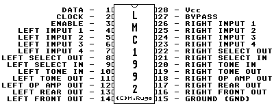

Previous
Next
TOC
Der LMC1992 PCM Soundchip

Digitally-Controlled Stereo Tone and Volume Circuits
General Description
The LMC1992 is a monolithic integrated circuit that provides four
stereo inputs, bass and treble tone controls, and volume, balance,
and front-rear fader controls. These functions are digitally con-
trolled through a three-wire communication interface. All of the
LMC1992s functions are achieved with only three external capacitors
per channel. It is designed for line level input signals (300 mV -
2V) and has a maximum gain of 0
dB.
The internal design is optimized for external capacitors having
values of 0.1 uF or less. This allows the use of chip capacitors
for coupling and tone control functions.
Low noise and distortion result from using analog switches and
thin-film silicon-chromium resistor networks in the signal path.
Volume and fader are at minimum and tone controls are flat when
supply voltage is first applied.
Additional tone control can be achieved using the LMC835 stereo
7-band graphic equalizer connected to the LMC1992's select-out/
select-in external processor loop.
Features
Low noise and distortion
Four stereo inputs
40 volume levels including mute
20 fader levels
All attenuators have a 2
dB of attenuation per step
Front/back fade control
External processor loop
Only three external components per channel
Serial programmable: standard MICROWIRE interface
Single supply operation: 6V to 12V supply voltage
Protection address (similar to DS8906)
DC-coupled inputs
Single supply operation
Kapitel Der LMC1992 PCM Soundchip, Seite 1